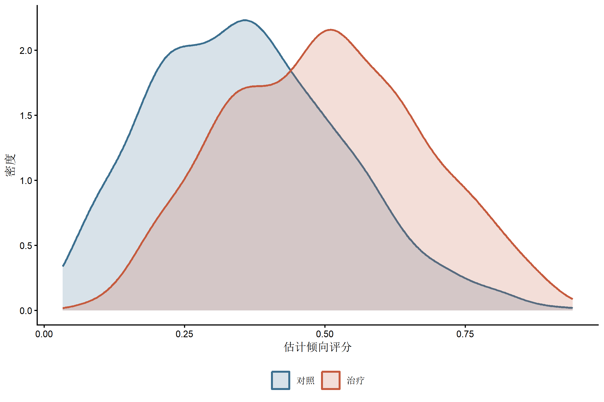
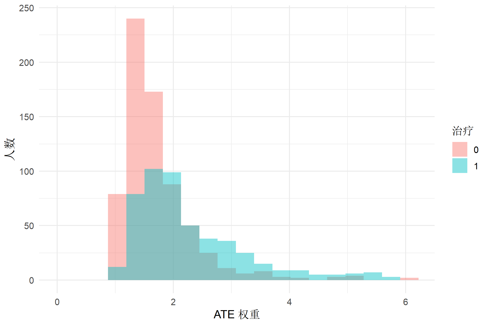
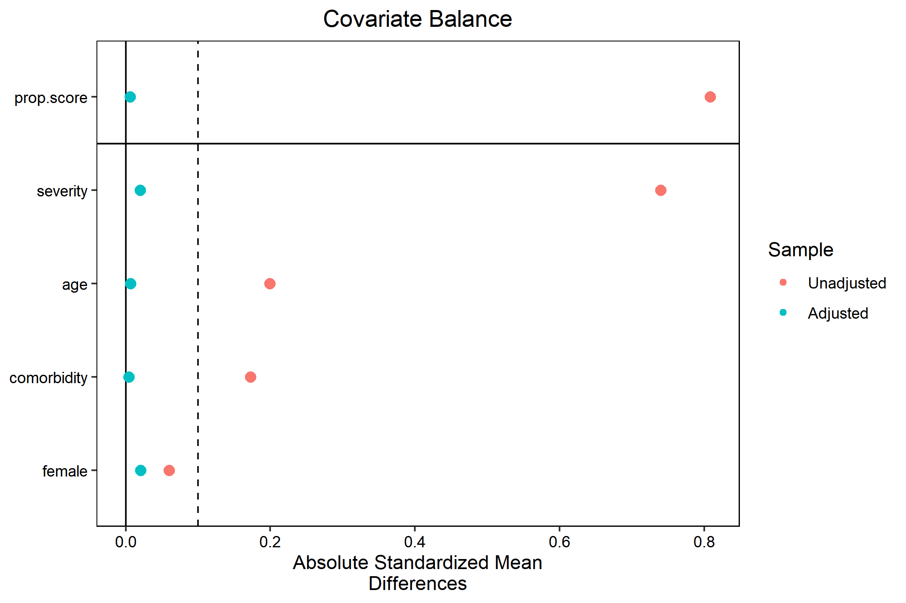

library(dplyr)
library(ggplot2)
library(WeightIt)
library(cobalt)
library(survey)倾向评分加权的诊断与推断
从 estimand、重叠与协变量平衡到极端权重敏感性分析
统计分析方法
因果推断
倾向评分
加权诊断
从 estimand 出发完成倾向评分加权、重叠与平衡诊断、ESS 评估、结局推断和截断敏感性分析
先定义目标人群，再计算权重
倾向评分 \(e(X)=P(A=1\mid X)\) 是在基线协变量 \(X\) 下接受治疗的概率。不同权重对应不同目标人群和 estimand，不能在看到结果后任意互换。
| Estimand | 治疗组权重 | 对照组权重 | 目标人群 |
|---|---|---|---|
| ATE | \(1/e(X)\) | \(1/[1-e(X)]\) | 总体 |
| ATT | 1 | \(e(X)/[1-e(X)]\) | 实际接受治疗者 |
| ATO | \(1-e(X)\) | \(e(X)\) | 两组重叠人群 |
ATE 在倾向评分接近 0 或 1 时容易产生大权重；ATO 会弱化重叠不足区域的贡献，但它估计的是重叠人群效应，不是“更稳定的 ATE”。选择 estimand 应由研究问题、治疗可及性和目标人群决定。
因果解释依赖哪些条件
倾向评分加权依赖：
- 一致性和明确的治疗版本；
- 给定纳入的基线协变量后不存在未测量混杂；
- 目标人群内具有足够的治疗阳性与分布重叠；
- 倾向评分、权重和结局分析得到正确实现；
- 没有未经处理的干扰、选择偏倚或信息性缺失。
平衡诊断只能检查已测量协变量，不能证明“无未测量混杂”。倾向评分模型的目标是产生适合 estimand 的平衡，而不是最大化治疗预测 AUC。
协变量如何选择
通常优先纳入治疗前的共同原因和结局强预测因子。应避免：
- 治疗后的中介或受治疗影响的测量；
- 仅因单变量 p 值不显著而删除重要混杂因素；
- 无科学理由地加入大量强预测治疗但与结局无关的工具变量，因为它们可能放大方差和未测量混杂偏倚；
- 用逐步回归显著性代替因果结构判断。
连续协变量常需要非线性项，关键变量之间可能需要交互。最终标准是加权后的分布平衡和数据支持，而不是倾向评分模型系数是否显著。
模拟观察性治疗数据
set.seed(20260731)
n <- 1200
ps_data <- tibble(
id = seq_len(n),
age = rnorm(n, 58, 11),
female = rbinom(n, 1, 0.54),
severity = rnorm(n),
comorbidity = rbinom(n, 1, 0.38)
) |>
mutate(
treatment_probability = plogis(
-0.35 + 0.025 * (age - 58) + 0.75 * severity -
0.45 * comorbidity + 0.25 * female * severity
),
treatment = rbinom(n, 1, treatment_probability),
outcome = 12 - 1.6 * treatment + 0.06 * (age - 58) +
1.10 * severity + 0.70 * comorbidity +
0.25 * severity^2 + rnorm(n, sd = 2.2)
)
ps_data |>
count(treatment)# A tibble: 2 × 2
treatment n
<int> <int>
1 0 696
2 1 504模拟中的真实生成式只用于验证教学代码。分析时不会把 treatment_probability 放进模型，因为真实数据中它不可见。
估计 ATE 权重
weight_fit <- weightit(
treatment ~ age + I((age - 58)^2) + female + severity +
I(severity^2) + comorbidity + female:severity,
data = ps_data,
method = "glm",
estimand = "ATE",
stabilize = FALSE
)
weight_fitA weightit object
- method: "glm" (propensity score weighting with GLM)
- number of obs.: 1200
- sampling weights: none
- treatment: 2-category
- estimand: ATE
- covariates: age, female, severity, comorbiditysummary(weight_fit) Summary of weights
- Weight ranges:
Min Max
treated 1.063 |---------------------| 11.819
control 1.034 |---------------------------| 14.867
- Units with the 5 most extreme weights by group:
418 391 235 119 106
treated 5.863 6.57 7.743 9.91 11.819
300 224 160 82 68
control 5.227 6.014 6.189 8.225 14.867
- Weight statistics:
Coef of Var MAD Entropy # Zeros
treated 0.492 0.342 0.097 0
control 0.494 0.273 0.080 0
- Effective Sample Sizes:
Control Treated
Unweighted 696. 504.
Weighted 559.42 405.85WeightIt 将估计的权重保存在 weight_fit$weights。上述二项 logistic 模型只是常用起点；若平衡不足，应根据具体变量关系调整非线性和交互，或使用适合的平衡优化方法，并避免在同一数据上无限试错后只报告最好的一次。
诊断一：倾向评分重叠
overlap_data <- ps_data |>
mutate(
propensity_score = weight_fit$ps,
treatment_label = factor(treatment, levels = c(0, 1), labels = c("对照", "治疗"))
)
ggplot(
overlap_data,
aes(x = propensity_score, colour = treatment_label, fill = treatment_label)
) +
geom_density(alpha = 0.20, linewidth = 0.8) +
scale_colour_manual(values = c("#3b6f8f", "#c55a3d")) +
scale_fill_manual(values = c("#3b6f8f", "#c55a3d")) +
labs(x = "估计倾向评分", y = "密度", colour = NULL, fill = NULL) +
theme_classic(base_size = 10) +
theme(legend.position = "bottom")
重叠图要结合目标 estimand 解读。少量尾部观察不自动要求删除；完全或近完全分离则提示某些目标人群对比缺乏数据支持。应核对数据错误、治疗禁忌、资格规则和模型外推，再决定缩小目标人群、改变 estimand 或停止估计。
诊断二：权重分布和 ESS
ps_weighted <- ps_data |>
mutate(weight = weight_fit$weights)
weight_distribution <- ps_weighted |>
group_by(treatment) |>
summarise(
n = n(),
mean = mean(weight),
sd = sd(weight),
min = min(weight),
p01 = quantile(weight, 0.01),
median = median(weight),
p99 = quantile(weight, 0.99),
max = max(weight),
ess = sum(weight)^2 / sum(weight^2),
.groups = "drop"
)
weight_distribution# A tibble: 2 × 10
treatment n mean sd min p01 median p99 max ess
<int> <int> <dbl> <dbl> <dbl> <dbl> <dbl> <dbl> <dbl> <dbl>
1 0 696 1.74 0.863 1.03 1.06 1.54 5.09 14.9 559.
2 1 504 2.34 1.15 1.06 1.14 2.00 5.79 11.8 406.ps_weighted |>
ggplot(aes(x = weight, fill = factor(treatment))) +
geom_histogram(bins = 45, position = "identity", alpha = 0.45) +
coord_cartesian(xlim = c(0, quantile(ps_weighted$weight, 0.995))) +
labs(x = "ATE 权重", y = "人数", fill = "治疗") +
theme_minimal(base_size = 12)
有效样本量（effective sample size, ESS）描述权重不均造成的信息损失，不等于独立观察的精确数量，也不能单独判定估计是否有效。绘图截断横轴只是为了看清主体分布，并未修改分析权重。
诊断三：协变量平衡
balance <- bal.tab(
weight_fit,
un = TRUE,
stats = c("m", "v"),
binary = "std",
thresholds = c(m = 0.1)
)
balanceBalance Measures
Type Diff.Un V.Ratio.Un Diff.Adj M.Threshold V.Ratio.Adj
prop.score Distance 0.8083 1.0548 0.0058 Balanced, <0.1 0.8344
age Contin. 0.1995 0.9683 -0.0068 Balanced, <0.1 1.0141
female Binary -0.0600 . -0.0205 Balanced, <0.1 .
severity Contin. 0.7401 1.0004 0.0201 Balanced, <0.1 0.8437
comorbidity Binary -0.1725 . 0.0043 Balanced, <0.1 .
Balance tally for mean differences
count
Balanced, <0.1 5
Not Balanced, >0.1 0
Variable with the greatest mean difference
Variable Diff.Adj M.Threshold
female -0.0205 Balanced, <0.1
Effective sample sizes
Control Treated
Unadjusted 696. 504.
Adjusted 559.42 405.85love.plot(
weight_fit,
stats = "mean.diffs",
abs = TRUE,
binary = "std",
thresholds = c(m = 0.1),
var.order = "unadjusted"
)
绝对标准化均值差（SMD）小于 0.1 是常见启发式标准，不是普适的统计检验或合格证。样本量大不会让小 SMD 自动有临床意义，样本量小也不会使大 SMD 可以忽略。还应检查：
- 连续变量的方差比、分位数、密度和尾部；
- 预设的重要非线性项与交互；
- 多分类治疗各对比和纵向治疗各时点；
- 缺失模式和缺失指示变量的平衡；
- 个别观察的影响。
不要根据加权后的结局模型结果反向选择倾向评分规格。
用权重估计结局效应
连续结局下，ATE 风险差尺度对应加权均值差。survey::svyglm() 提供 sandwich 方差；结果模型不需要为了“显著”再加入一套事后筛选变量。
weighted_design <- svydesign(
ids = ~1,
weights = ~weight,
data = ps_weighted
)
weighted_fit <- svyglm(
outcome ~ treatment,
design = weighted_design
)
summary(weighted_fit)
Call:
svyglm(formula = outcome ~ treatment, design = weighted_design)
Survey design:
svydesign(ids = ~1, weights = ~weight, data = ps_weighted)
Coefficients:
Estimate Std. Error t value Pr(>|t|)
(Intercept) 12.5605 0.1093 114.887 <2e-16 ***
treatment -1.5011 0.1645 -9.127 <2e-16 ***
---
Signif. codes: 0 '***' 0.001 '**' 0.01 '*' 0.05 '.' 0.1 ' ' 1
(Dispersion parameter for gaussian family taken to be 6.624525)
Number of Fisher Scoring iterations: 2confint(weighted_fit) 2.5 % 97.5 %
(Intercept) 12.345981 12.774975
treatment -1.823822 -1.178441常规 sandwich 方差把最终权重视为给定，未必完整反映倾向评分估计和模型选择的不确定性。可使用 WeightIt 支持的结果模型方法，或按原始抽样单位 bootstrap，并在每次重复中重新估计倾向评分、权重和结局模型。匹配、聚类、重复测量或复杂抽样还要使用相应的簇级方差。
二分类结局若使用带 logit 链接的加权回归，治疗系数是边际结构模型的 log OR；由于 OR 非可折叠且不直观，常进一步标准化得到风险、风险差或风险比。生存结局也应预先定义时间范围和效应尺度，不把加权 Cox HR 当作唯一答案。
权重截断是敏感性分析，不是默认步骤
任意使用 1%/99% 或 5%/95% 截断会改变权重、引入偏倚，并使估计对应的加权人群偏离原定 ATE。若根据预设方案需要考察截断，可保留未截断主分析，并清楚报告规则、平衡和 ESS 的变化。
trim_limits <- quantile(ps_weighted$weight, c(0.01, 0.99))
ps_sensitivity <- ps_weighted |>
mutate(
weight_trimmed = pmin(
pmax(weight, trim_limits[[1]]),
trim_limits[[2]]
)
)
trimmed_design <- svydesign(
ids = ~1,
weights = ~weight_trimmed,
data = ps_sensitivity
)
trimmed_fit <- svyglm(
outcome ~ treatment,
design = trimmed_design
)
tibble(
analysis = c("未截断 ATE 权重", "1%/99% 截断敏感性分析"),
estimate = c(coef(weighted_fit)["treatment"], coef(trimmed_fit)["treatment"]),
std_error = c(
sqrt(vcov(weighted_fit)["treatment", "treatment"]),
sqrt(vcov(trimmed_fit)["treatment", "treatment"])
)
)# A tibble: 2 × 3
analysis estimate std_error
<chr> <dbl> <dbl>
1 未截断 ATE 权重 -1.50 0.164
2 1%/99% 截断敏感性分析 -1.47 0.164截断后必须重新检查平衡，不能只比较效应数值。若极端权重来自结构性阳性违背，截断可能让结果看起来稳定，却不能创造缺失的治疗对照。
常见错误
- 在看到权重后才决定 ATE、ATT 或 ATO，却仍沿用原研究问题。
- 把治疗后变量纳入倾向评分模型。
- 用预测性能或 Hosmer–Lemeshow 检验代替平衡诊断。
- 只报告平均 SMD，不检查尾部、交互和 ESS。
- 把 0.1 当作普适合格线，把 1%/99% 当作通用截断规则。
- 截断后仍把结果无条件称为原总体 ATE。
- 忽略估计权重、聚类和缺失数据带来的方差问题。
- 因已测量协变量平衡而宣称研究“等同随机试验”。
报告清单
- 目标人群、治疗定义、时间零点和 estimand；
- 协变量选择依据及其测量时间；
- 倾向评分方法、函数形式、软件和版本；
- 治疗组与对照组的倾向评分重叠；
- 权重分布、极值、ESS 和个体影响；
- 加权前后的均值、方差、分布与关键交互平衡；
- 结局模型、效应尺度和方差估计；
- 截断或更换 estimand 的理由及敏感性分析；
- 对未测量混杂、阳性和缺失数据的限制说明。
参考资料
- WeightIt 官方文档
- cobalt 官方文档
- Austin PC, Stuart EA. Moving towards best practice when using inverse probability of treatment weighting using the propensity score. Statistics in Medicine. 2015;34(28):3661–3679. doi:10.1002/sim.6607